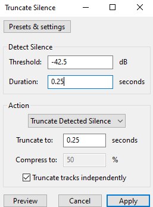

#
Dataset & Isolation
Last update: May 5, 2025
#
Introduction
In this massive guide it will be explained how to properly prepare a dataset to make a RVC model.
In the field of AI, it's the collection of data used to train an AI model. It contains examples of the inputs the model is expected to handle, along with the correct outputs.
In the context of RVC, it's an audio file that's given to RVC, containing the voice the model is going to replicate. It can be a speaking, singing voice drums, sound effects or noise.
The quality, variety & length of the dataset are the biggest determining factors for the final quality of the model. Let's explain Length and Variety.
#
Length & Variety
For beginners we recommend sticking with a dataset length of 15 minutes of pure data not counting silence, or if you desire a natural sounding model go for 40+ minutes of dataset. Just remember quality over quantity.
Variety in your dataset is also important because without it RVC lacks the ability to generate diverse audio.
Some things to increase the generalization abilities of RVC and increase the diversity in your dataset include:
- Removing repeated words. ( If you want you can be extreme you can do this and remove every single repeated word that's fine, but generally there is no need to do this. )
- Include speech in many ranges and pitches.
- Longer datasets.
- Expressive speech.
#
Quality
- A quality dataset is super important for RVC since without one RVC will struggle to make anything good or believable.
#
Here are some recommendations for a quality dataset.
#
#
Clean vocals.
- Ensure there isn't much background noise, reverb, overlapping voices, music, distortion, or small silences. Some quiet natural background noise is fine and won't ruin your model since the original pretrains for RVC were made with a noisy dataset, so RVC knows how to deal with noise. You'll learn more on cleaning vocals in the Vocal Isolation & Cleaning section below.
#
Audio quality.
- The higher the audio quality, the better. If possible have it in a lossless format like WAV or FLAC, not a lossy one like MP3. No converting a MP3 to a FLAC or WAV won't remove the compression.
#
No harsh sibilance/popping.
- Additionally, don't include harsh sibilance (loud "S" & "SH" pronunciation) or popping sounds (loud "P" sound)
- Robotic sibilances are due to your dataset being short or they are overfitted. You can fix this by making your dataset larger or by choosing an epoch where the sibilants aren't overfitted.
- Harsh sibilances are due to your dataset having harsh sibilants. You can fix this by de-essing or making your dataset larger.
#
No Audio Damage.
- The most inportant part of a clean dataset, if your audio is damaged RVC will struggle with it causing it to overall sound worse because RVC will create synthetic data and try to learn from it, so make sure your audio isn't damged.
#
Artifacts
In RVC, artifacting refers to an anomaly where the output voice sounds "robotic" & glitchy.
This occurs after the inference or model training process.
#
Causes
It usually occurs when the dataset/vocal sample meets any of these criteria:
• Audio is low-quality
• Voice model was overfitted, undertrained or overtrained
• There are overlapping voices
• There is reverb
• There is noise
As you noticed, most of the issues boil down to the audio sample not being properly clean. RVC is built for purely working with voices, not other sounds.
Remember that the cleaner your input audio is, the better the results.
#
Solutions
#
1. Use a lossless format:
If possible, it's best if your audio is in a lossless format like WAV or FLAC, preserving its original quality.
Avoid using lossy ones like MP3 or OGG.
#
2. If doing inference:
Remove undesired noises with an vocal isolation software.
Lowering the search feature ratio can also minimize this issue.
If breathing sounds produce it, lower the Protection value.
#
3. If training models:
- Ensure to clean your dataset properly, this includes removing silences and distortions.
#
Vocal Isolation & Cleaning
A vocal isolation app is a software designed to extract a person's vocals from an audio file, usually through the use of AI models.
They can remove undesired noises, like background noise, reverb, echo, music, etc.
The goal is to get an audio sample with clean and natural vocals, which is what RVC needs to give the most accurate & quality results.
For RVC users, the best app is Ultimate Vocal Remover 5 (or UVR). It can be used either locally or through the cloud.
If you want to remove noise manually to avoid ai artifacts you can use RX 11, which is mentioned in this guide.
#
Local UVR
You'll require great specs & GPU to run it effectively. Otherwise, use either the google colab version or the Huggingface space.
-
-
#
Installation
Go to their official website & press
Download UVR. If you want to use BS / Mel Roformer you are going to need to install this.
#
- It will redirect you their GitHub page. Click the download link for your operating system.
UVR is available both on Windows & Mac.
#
Once the installer finishes downloading, execute it & follow the instructions.
Make sure to tick🗹 Create a desktop shortcutfor an easier access to UVR.
#
#
#
How to Use
#
#
1. Input audio.
#
Click
Select inputto select your audio/s. Or just drag the files to it.
In
Select outputyou can define the folder for the results.
For better results, have the audio in a lossless format (WAV or FLAC), & not MP3.
#
2. Select FLAC & GPU Conversion.
#
At the right you can select the output format.
We recommend pickingFLAC. Learn why here.
If your GPU is compatible with CUDA, toggle
GPU Conversionon for a faster process.
#
This step is not mandatory, but recommended for better results.
#
3. Extract vocals.
#
In CHOOSE PROCESS METHOD select
MDX-Net, and select either theBS Roformer-Viper-X 1296orMDX23Cmodel.
#
#
- Now click the long
Start Processingbutton.
#
TIP: To test models/options more efficiently, tick Sample Mode to only process 30 seconds of your sample.
#
4. Clean vocals.
#
Usually songs include reverb & backing vocals. These negatively impact the results in RVC.
So if the output has any undesired noises, follow the procedure on Cleaning Vocals.
#
#
1. Input audio.
#
Click
Select inputto input the vocals. Or just drag the files to it.
In
Select outputyou can define the folder for the results.
For better results, have the audio in a lossless format (WAV or FLAC), & not MP3.
#
2. Select FLAC & GPU Conversion.
#
At the right you can select the output format.
We recommend pickingFLAC. Learn why here.
If your GPU is compatible with CUDA, toggle
GPU Conversionon for a faster process.
#
This step is not mandatory, but recommended for better results.
#
3. Select model.
#
In Process Method select
VR.
Set Window Size to
320. (optional)
Lower Window Size yield a higher output quality, but will take longer to process.
Check the model list. In Select VR Model pick the one according to what you need to remove.
If you need to remove multiple noises, follow this pipeline for the best results:
Remove instrumental -> Remove reverb -> Extract main vocals -> Remove noise
#
TIP: To test models/options more efficiently, tick Sample Mode to only process 30 seconds of your sample.
#
4. Process.
#
Click the Start processing button at the bottom. And that will be all.
#
# The best models for UVR are:
#
Troubleshooting
#
- Click the wrench (🔧) on the left & go to
Download Center - Select the category of the model (MDX-NET or VR)
- Unfold its dropdown & select the model that you need
- Then click the download button (📥). The model will download, which will take a few minutes
#
- Modify the
Aggression Settingvalue on the right. - This determines the depth of the extraction. Only the VR method has it.
- A higher value will deepen the extraction, and a lower one will soften it.
- Each audio is different, so you'll have to test the ideal value.
#
- Run the audio through BVE. Modify the Aggression Setting if necessary.
#
RX 11
-
-
#
Installation
- Go to their official website & buy it or sail the seven seas and find a treasure box which contains RX 11.
#
#
Usage
- To use RX 11 it is STONGLY recommended that you read this guide on RX 11.
#
Cloud UVR
#
How to Use
#
#
1. Set up Colab
#
First access the Colab space here.
Then Log in to your Google account.
Execute the Gdrive Connection cell by pressing the play button . Grant all the permissions.

- It'll finish once the logs say
Mounted at /content/drive
Then run the Install cell.

Once it's done it will look like this:

#
2. Set up folders
#
- In Google Drive, make two folders, named input & output.

#
3. Separate
#
- Select your model of choice and run the Separation cell. You can look here for the best models

These are the best settings:
- Overlap: 8
- Chunk Size: 485100
- Download the result located in the output folder.
#
Troubleshooting
#
Cannot connect to GPU backend.
- You have exhausted the GPU runtime of Colab.
#
UVR Zero GPU
#
How to use
#
Access the space here, you don't need an account to use this.
#
2. Select vocals & options
#
Tap the Input Audio box & select your audio, or simply drag & drop.

Once it's done uploading, in CHOOSE PROCESS METHOD, select
BS/Mel Roformer. Under that you can change Segment Size and Overlap, the defaults are fine.

#
3. Select model
#
- Check the best models list & in CHOOSE MODEL pick the one according to what you need to remove.
If you need to remove multiple noises, follow this pipeline for the best results:
Remove instrumental -> Remove reverb -> Extract main vocals -> Remove noise
#
4. Start Processing
#
Click Spererate! below. Wait a moment for the audio to process.
Playable audios will then appear in the output boxes below. To download the output, click the little download icon in the top right.
- If you're extracting lead vocals, remember to download the backing ones if you wish to keep them.
#
Troubleshooting
#
- Modify the
Aggression Settingvalue on the right. - This determines the depth of the extraction. Only the VR method has it.
- A higher value will deepen the extraction, and a lower one will soften it.
- Each audio is different, so you'll have to test the ideal value.
- Run the audio through BVE. Modify the Aggression Setting if necessary.
#
- Report your issue here.
#
GPU task aborted:
ZeroGPU HuggingFace Spaces have a max inference time duration, it’s the time it takes to do an Inference (use the model, not the time of your audio file itself), on default it’s around 1 minute which is what Ilaria RVC uses. You need to retry with a shorter audio, you could also split your audio.
#
You have exceeded your GPU quota ( NUMBER s left vs. 60s requested). Sign-up on Hugging Face to get more quotas or retry in Hour:Minutes:Seconds
ZeroGPU HuggingFace Spaces have a quota per account, if you aren’t signed in you will get less quota so it’s better to login for more quota. You could get the ‘Sign-up’ part even if you are logged in. The ZeroGPU Quota can’t be seen but it isn’t unlimited. You can either:
- Login so you get more quota
- Wait
- Pay to be an HuggingFace PRO Member to get X5 times more quota
#
Best Models
#
#
Important Notes
MVSEP is a website for isolating vocals, that works similarly as UVR.
The UVR Colab is much faster & convenient for this task. Use MVSEP if you run out of GPU runtime or feel lazy to convert your audio to WAV.
For free users, you can't convert audios in batches or longer than 10 minutes. If that's your case, trim it into different pieces.
There is a queue so make sure you make an account to skip most of it.
#
#
#
How to Use
#
#
1. Log in.
#
Logging in is not mandatory, but recommended for shorter waiting lists.
#
2. Select audio.
#
Click
Browse File& select your audio, or simply drag & drop. The audio will begin to upload.
#
3. Extract vocals.
#
In Separation type select
BS Roformer
In Output encoding select
FLAC.
We recommend selecting FLAC from now on. Learn more here.
Once the audio is done uploading, click
Separate
Leave "Model Type" untouched.
#
4. Download output.
#
- When it's done converting it will redirect you to a page where you can listen the results.
Tap the three buttons of the Vocals audio and then
Download.
Same thing for the Instrumental, if you wish to keep it.

#
4. Clean vocals
#
Usually songs include reverb & backing vocals. These negatively impact the results in RVC.
So if the output has any undesired noises, follow the procedure on Cleaning Vocals.
#
#
1. Log in.
#
Logging in is not mandatory, but recommended for shorter waiting lists.
#
2. Select audio & output format.
#
Click
Browse File& select your audio, or simply drag & drop. The audio will begin to upload.
In Output encoding select
FLAC.
We recommend selecting FLAC from now on. Learn more here.
#
3. Select model.
#
In Separation Type, select
DeNoise by aufr33.
Check the model list. Pick the one according to what you need to remove.
If you need to remove multiple noises, follow this pipeline for the best results:
Remove instrumental -> Remove reverb -> Extract main vocals -> Remove noise
#
4. Download output.
#
Click
Separate& when it's done converting it will redirect you to a page, where you can listen the results.
Tap the three dots of the audio you need and then
Download.
If you wish to keep the backing vocals stem, remember to download it too.
# The best models for MVSEP are:
#
Troubleshooting
#
- Using the Separation Type of
DeNoise by aufr33, you can modify theAggressiveness.This determines the depth of the extraction. - A higher value will deepen the extraction, and a lower one will soften it.
- Each audio is different, so you'll have to test the ideal value.
#
- Try running the audio through MelBand Karaoke or BVE. Modify the Aggression Setting if necessary.
#
How to Use
Most of the extraction model are behind a pay wall.
#
#
1. Choose a Separator
#
- First go to X-minus's website and click the "Vocal Remover" at the top right.

- Then select "Music and vocals" and choose "Bs Roformer"
#
2. Upload Your Audio File
- Then click "select a file" and choose a audio file, or you can drag and drop a file. And when it's done it will look like this:

- You can now click "Vocals" to download the vocals and "Other" to download the instrumentals.
#
#
1. Choose a De-Noiser
#
- In "De-Noise" select "Mel-Roformer De-Noise". You can also check the model list to see what is the best model for your needs.

#
2. Upload Your Audio File
- Then click "select a file" and choose a audio file, or you can drag and drop a file. And when it's done it will look like this:
- You can now click "Vocals" to download the vocals and "Other" to download the instrumentals.
# The best models for X-Minus are:
#
Preparing the dataset
#
Step 1: Find the Sample Rate
This is a unit in that defines the total amount of samples (data) that can fit within 1 second of an audio. They are measured in kilohertz (kHz).
The most common sample rates are 32, 40, 44.1, & 48. The higher the sample rate, the more information it stores, therefore the higher the quality.
While training in RVC, you'll have to set the target sample rate as your dataset's. This value affects the final quality.
# A simple way to determine it is with Spek:# STEP 1:Download and install Spek here.
# STEP 2:Open spek and just drag & drop audio into it.

WARNING:
If the frequencies don't reach the top of the spectrogram, see at which number peaks & multiply it by 2. Here it reached 20 kHz. Doubling it gives 40kHz. Therefore the ideal target sample rate would be
40k
#
Step 2: Truncating Silence
- In Audacity import your audio
- Go to Effects -> Special -> Truncate Silence
Use the following values:

# Step 2.1: Audio Normalization (Optional)- Go go to Effects -> Volume and Compression -> Loudness Normalization
- Use these values:

LUFS are used over db because hifigan needs perceptual quality and db doesnt offer that.
#
Step 2.2: Combining Audio
- Go go to Tracks -> Align Tracks -> Align End to End
#
Step 3: Export
- On the upper right corner go to File and click
Export Audio.

And finally, introduce these values:
- Format:
WAV - Encoding:
32-Bit Float
# - Format: